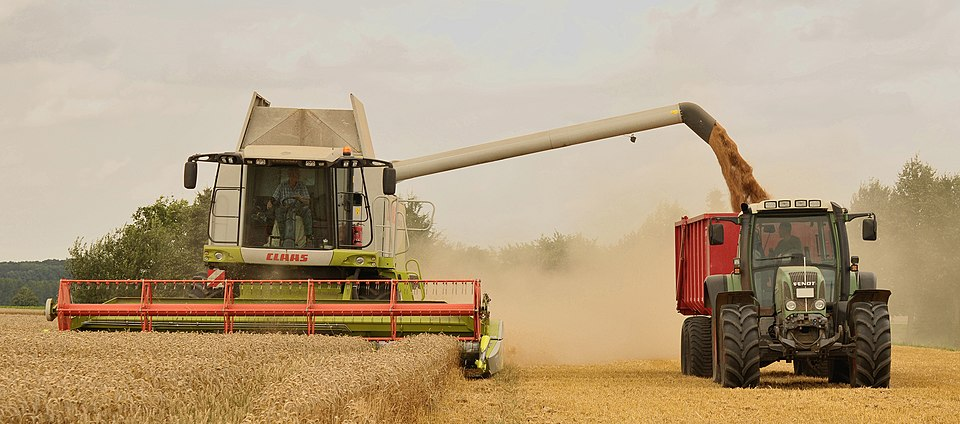
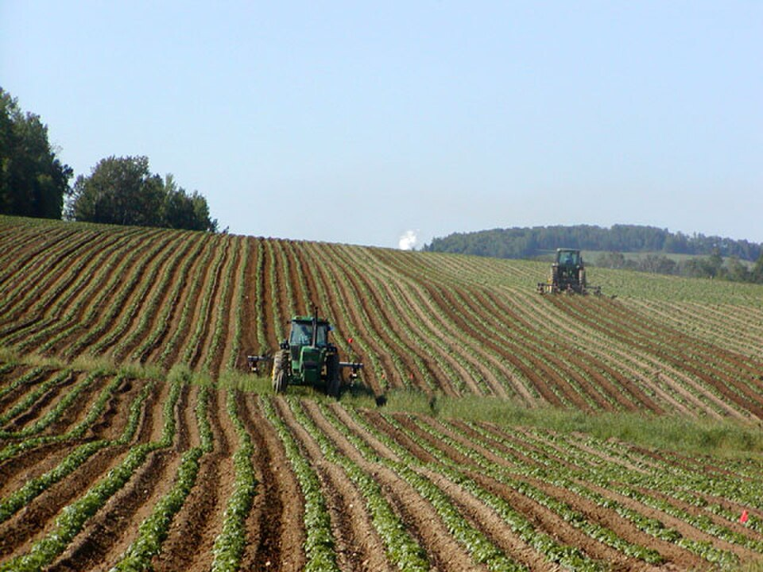
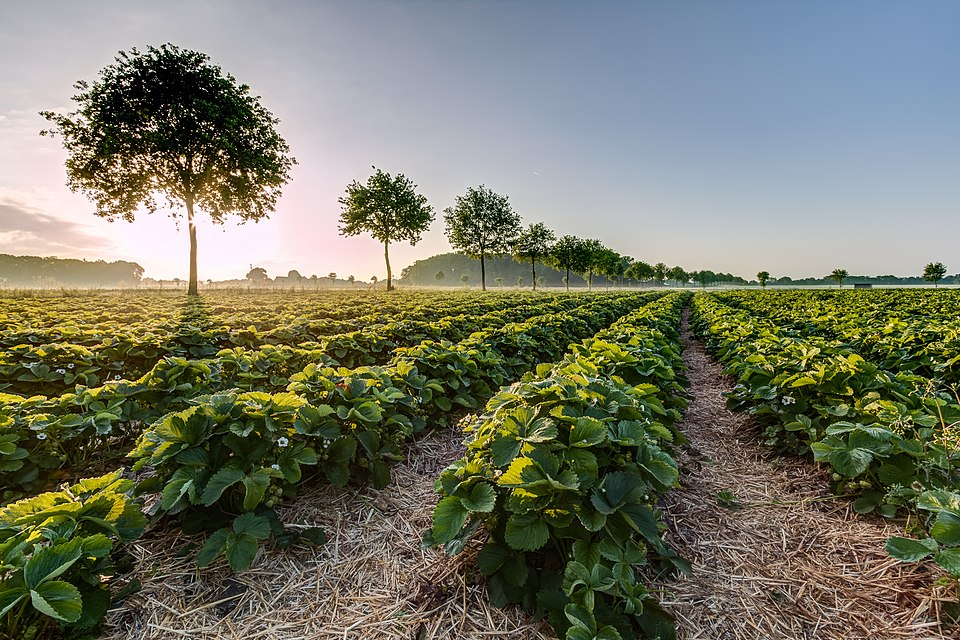

- Agro forte, futuro sustentável
- Equilíbrio entre produção e meio ambiente
Representa o auge da produção. Nela, vemos uma colheitadeira (combinada) extraindo grãos e transferindo-os simultaneamente para um trator com carreta graneleira. Esta fase exige planejamento logístico para garantir que o grão colhido mantenha sua qualidade durante o transporte e armazenamento.

Esta imagem mostra o desenvolvimento vegetativo da cultura. Os tratores operando entre as fileiras organizadas indicam atividades de manutenção, que podem incluir:Controle de pragas e doenças: Aplicação direcionada de defensivos.Adubação de cobertura: Reposição de nutrientes conforme o crescimento da planta.Manejo de plantas daninhas: Garantindo que a cultura principal cresça sem competição por recursos.

Representa a fase de pós-emergência, onde as plantas já estão estabelecidas em campo. O alinhamento preciso das fileiras reflete o sucesso da etapa de plantio e semeadura. É um momento crítico para o monitoramento da saúde das plantas e verificação do "estande" (população de plantas por área), garantindo que as condições de solo e água estejam ideais para a próxima fase de floração.
